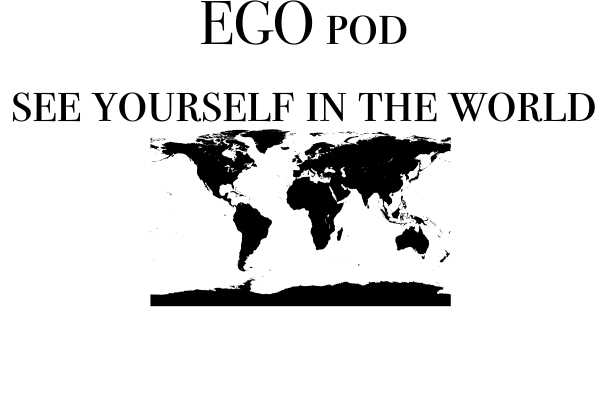
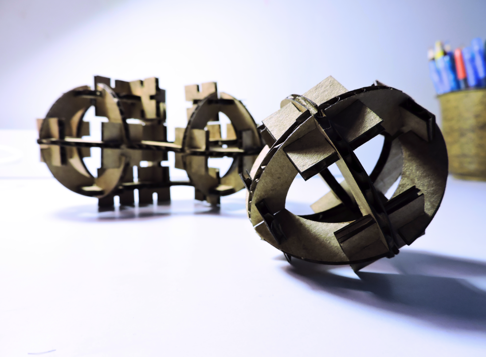
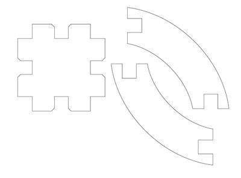
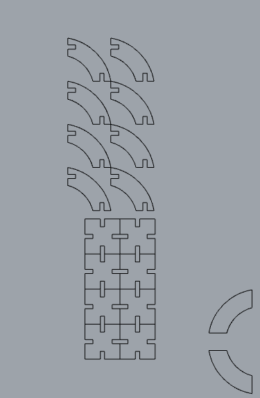
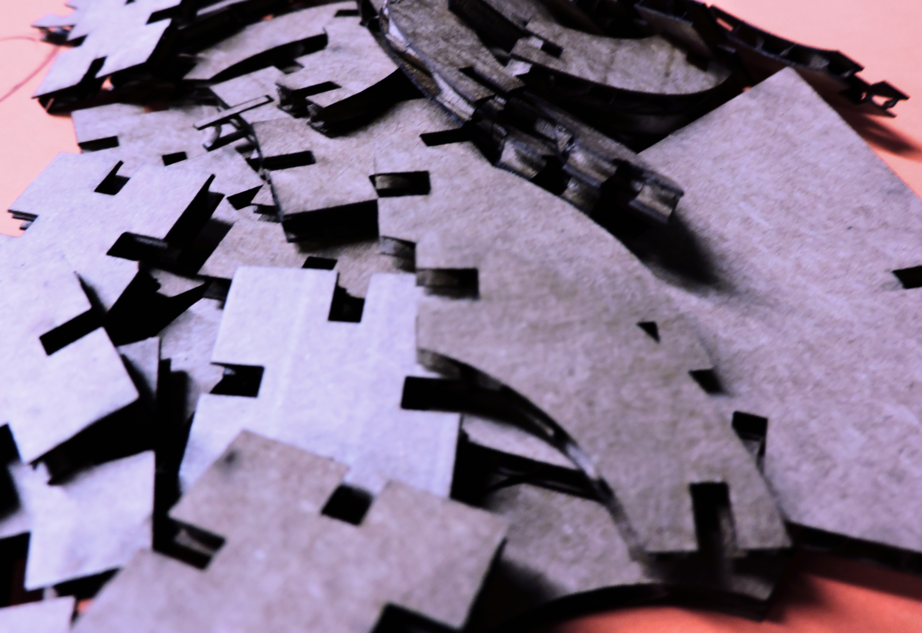
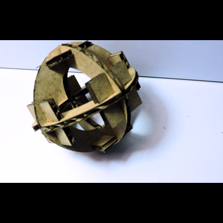
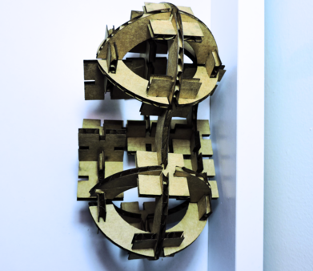
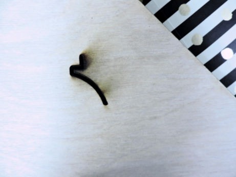

Week ONE.
Vinyl & Laser Cutting
Main Page

In the theme of spheres and pondering worldly ideations, in this weekly project, I wanted to continue with the theme of my beloved:
E.G.O. pod.
Vinyl Cutting
Overall, I must say that this was the easier of the two projects. It was more along the lines of lock and load, and through the process I had to mainly learn the process and order of setting the vinyl cutter to teh desired image/shape I wanted to cut. One of the minor challenges I did face was the Export versus Save As function. Whereas the former exported the piece selected, the latter 'exported' the entire page.
The difference being:
and Hopefully, as you can tell, I chose to make a logo (if you can call it that) for my E.G.O. pod. While I didn't necessarily play around with fonts, getting accustomed to the device and methodology to load up the vinyl, set the origin, etc. was paramount.

The other piece I forgot to mention was my trouble with the transfer adhesive. The issue was that each of these letters were separate entitiies, which made it increasingly difficult to transfer in one feel swoop. Ultimately, I ended up reprinting the piece a bit larger and placed the components by hand. Can you sense the crookedness? This is something definitely worth correcting.
Laser Cutting - Press Fit Kit
Regarding this laser piece, I thought it useful to play around with circles and spherical objects. [Yes, I understand the Earth is not exactly a sphere, but for the sake of building these objects and my clear beginner-ship, this will be a concern much later in the course.]
With the help of a lovely TA, I was able to create these shapes through Rhino and the use of parametric notches through it's extension, Grasshopper. I found several sketches of models to create this spherical shape. From the internet model, see left, to Rhino/Grasshopper model, see right:
 Through this process, I definetely came to see the use and value of the command line and specific commands.
Some Favorite Commands:
InterpCrv
Offset
Rotate Copy
Trim
What I Laser Cut
What I Made
 Albeit this was a little less spherical than intended. The notches were a little too deep, which offset the spherical nature of this overall shape.
I have no idea what this left shape is, but it was rather intriguing to explore the possibilities. Rounded surfaces in general intrigue me, so as I was building and creating, I kept thinking about how this blob mirrored a sneaker or spaceship of some sort.
Can you tell that notions of mobility also fascinate me?
A Laser Cutting Mishap
In this saga of not feeling all too equipped in these software, I wanted to play around with the use of materials. I chose to use some of the scraps from the GSD, in particular a board of Balsawood. I appropriately and accurately set up the laser cutter according to the 3/8" dimensions--the alignment of the table, the specific settings of power, speed and intensity, etc.
What ensued was:
In consultation with individuals much more familiar with this device, perhaps it might be of better to use a more powerful machine in trying to cut such a thick material. Perhaps my original image was not explicit enough. In attempting to cut the Balsawood, the laser was spitting out flames. Both before and after a couple of readjustments.
I am grateful that even in my beginner status, I have yet to damage any machines of bodies present in the learning of this making of almost anything.